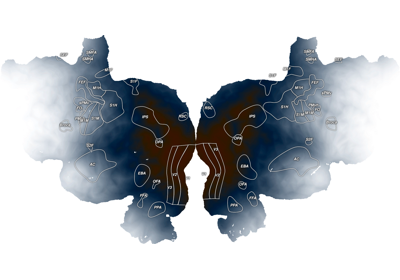
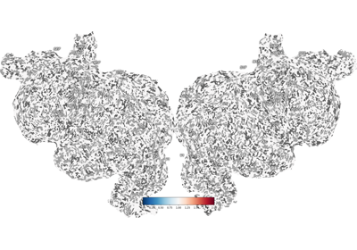
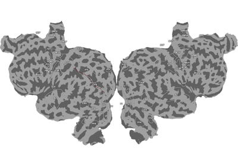
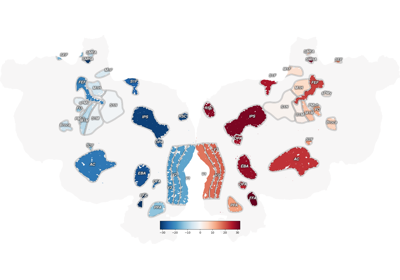

Example Gallery¶
Datasets Examples¶
Examples demonstrating how to create, manipulate, plot datasets.

Map from Volume to Vertex Data
Map from Volume to Vertex Data



Plot 2D Vertex Data


Plot RGB Volume Data
Examples with fsaverage¶
Examples showing how to use PyCortex to visualize data on fsaverage.

Upsample data from a lower resolution fsaverage template to fsaverage for visualization
Upsample data from a lower resolution fsaverage template to fsaverage for visualization
Importing Surfaces Examples¶
Examples demonstrating how to import surfraces from other software (e.g. FreeSurfer, fmriprep).

Quickflat Examples¶
Examples demonstrating how to create flatmaps.
Plot sulci on the flatmap



Ignore NaN (not-a-number) values in thickness mapping
Ignore NaN (not-a-number) values in thickness mapping


Quickstart Examples¶
Examples demonstrating how to get started with pycortex.


Plot Example Retinotopy Flatmaps
Plot Example Retinotopy Flatmaps
Surface Analysis Examples¶
Examples demonstrating operations and analyses done on brain surfaces.


Plotting Geodesic Paths


Utility Examples¶
Examples demonstrating how to do all sorts of beautiful things using pycortex.



Get ROI Index Volume
WebGL Examples¶
Examples demonstrating how to make beautiful interactive 3-D viewers